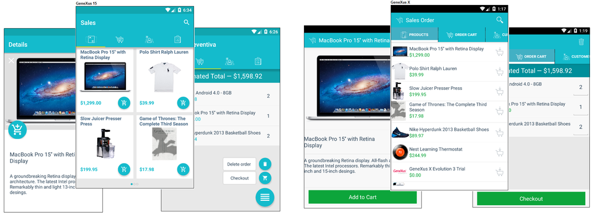
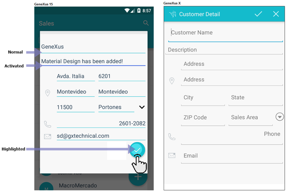
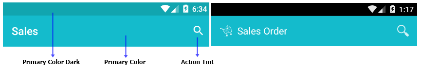
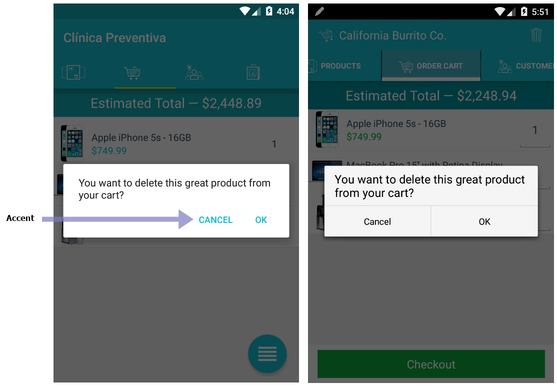
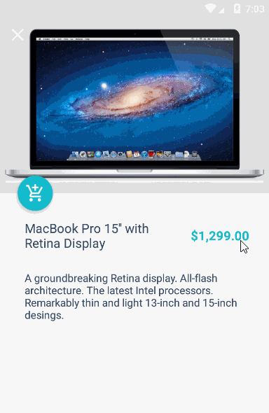
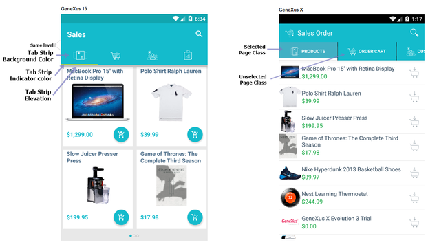
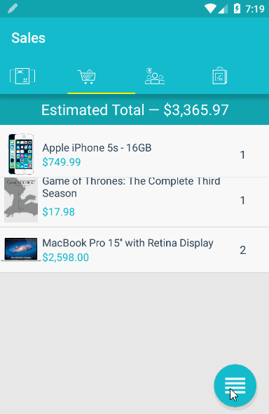
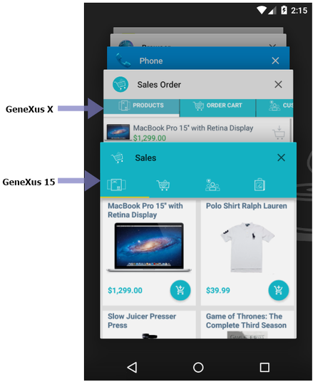
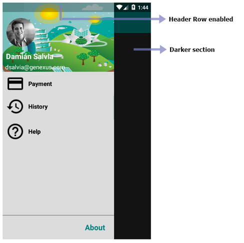

Due to the diversity offered by the Android platform, it is challenging to design applications that fit a particular ecosystem. To this end, GeneXus15 incorporates features in the Android Generator to help developers follow Material Design guidelines. This Android offering allows developers to customize the Look & Feel of applications as from version 5 of this platform (a.k.a Lollipop) and make them more user-friendly with an optimized UX. These functionalities are offered by GeneXus in two ways: customizable through properties and provided by default. For this purpose, the Sales sample will be used to explain and show all of them, making a comparison of the results using GeneXus X. 
Customizable through propertiesA set of properties helps developers meet all the aesthetic requirements of their application, such as colors and shadows. 1) General appearanceWhen designing an application, a developer usually wants to set certain colors in some sections of the application and keep them unchanged. Editable fieldsThree properties specially devoted to customizing the color aspect of those fields by entering data from the device to the central system.  Also, to follow the standards, their appearance has been improved. Note how text fields are shown as a floating line, instead the traditional one. Action barThe upper section is the most important design element of any application. Its visual appeal can determine if the end user feels comfortable with the developed system, and whether he/she will continue to use it.  In addition, the color of the icons embedded in the application bar can be customized through the Action Tint property. This color should be lighter than the primary color, for developers to easily ensure color harmony for the application. Activation signalsA single property allows developers to change the color of those controls when enabled by the end user (e.g. a tap on a button or a text confirm in a modal window). This behavior was provided by default in Android 4 operating system (or previous versions), in order to break the application's color harmony. As from Android 5, these controls can be customized.  2) Status bar colorEven though the status bar color can be statically set using the described primary color dark property (under Application Colors group), it may be desirable to change it dynamically under certain conditions (e.g. depending on the panel viewed or some events activated by the end user). To do this, a new property for Themes has been added under Application Bars class named Status Bar color. This allows developers to dynamically change the class associated with the application bar (including the status bar) just by assigning it when certain conditions are satisfied - e.g. depending on the panel viewed. A possible usage could be to hide the application bar when the end user swipes up on the screen and contrast the status bar against the background. When the end user swipes down, it makes it appear normally.  Note how the status bar changes its color in response to the event. This means that the Primary Color Dark property will not take effect if the Status Bar color property is set. 3) ElevationA simple action powered by Android adds shadows to individual controls and gives the end user the impression that some controls are stacked onto others (and consequently, more or less relevant) depending on their functionality. To simplify the task for developers, GeneXus has incorporated the Elevation property for some controls under its corresponding themes class to give this effect. Note how the table that represents a product item casts a shadow, as does the button embedded in it. This indicates end users that there is an item with a clickable button on it. This concept may be familiar to those developers who use ZOrder property for Canvas to add this overlay effect on the application's controls. 4) Tab strip customizationIn previous versions of GeneXus, this customization of the tab strip was limited to Tab page classes that are not designed to follow the Material Design guidelines. Since GeneXus 15, developers only need to set three properties. 
Provided by defaultThis is a set of effects whose behavior is based on customizable properties. 1) Touch ripplesSometimes it is tough for end users to notice when a tappable gesture on their devices has taken effect. Touch Ripples is a simple visual effect offered by Android to notify end users that the device has interpreted their requests successfully. When the end user taps on a control that has an event associated with it, a highlighted circle will be expanded from the touch point to the control borders, filling it completely and finally triggering its event.  2) Task colorAs is well known, Android devices provide three physical/capacitive buttons, each one dedicated to a particular action. The Home and Back buttons are self-explanatory, but the third button always creates controversy. Most people often call it Overview, as it allows end users to view quickly which applications were closed recently and, optionally, restore them to continue using them.  3) Slide menuWhen the Navigation Style is Slide, the left drawer automatically set its size following the guidelines and leaves a shadow in the right section when to display it. 
ScopeLanguages: .NET, Java SD Generators: Android
AvailabilityThis property is available since GeneXus 15
|
| Backlinks | ||
| ApplicationBars theme-class for Smart Devices | DateTime picker for Smart Devices | Elevation property |